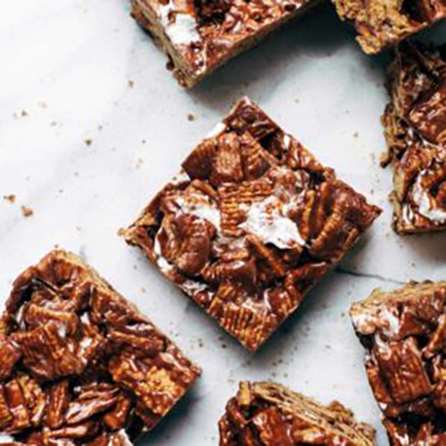

Golden Grahams Bars! Crunchy, chocolatey, and made with just FIVE
ingredients. Even better: it's no-bake a super easy to make. Winning!

INGREDIENTS
6 tablespoons butter
1 1/2 cups chocolate chips
1 bag of mini marshmallows
1 teaspoon vanilla
1 12-ounce box of Golden Grahams cereal
INSTRUCTIONS
Prep: Set one cup of the mini marshmallows aside.
Chocolate Mixture: Melt the butter, chocolate chips, mini
marshmallows, and vanilla in a large pot over medium heat
until mostly smooth.
Add Golden Grahams: Mix in the Golden Grahams cereal
and remaining marshmallows. Stir to combine
Press Into Pan: Press into a 9x13 pan. Let them cool /
solidify for an hour or two. Cut into 12 big bars and devour
like a hungry Golden Grahams Bar wolf.
NUTRITION FACTS
Serves 1
Calories Per Serving: 378